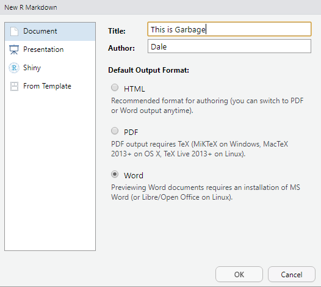
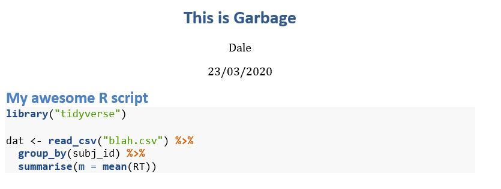

Topic 3 R Tips and Tricks
3.1 Show R code in Word
How do I get nicely formatted R code into a Word document?
You might want to include your R code as an appendix in a document. If you just cut and paste it in, the formatting will look terrible. So here is a trick that allows you to get nicely formatted R code into Word.
First step: open a new R Markdown file which you will paste the code into. For the output format, select Word.

Second step: paste the code into a block with chunk options eval=FALSE, echo=TRUE.
```{r verb, eval = FALSE, echo=TRUE}
## this is my code
library("tidyverse")
dat <- read_csv("blah.csv") %>%
group_by(subj_id) %>%
summarise(m = mean(RT))
```Third step: compile to Word. You can now copy and paste the formatted code into your document.

March 23, 2020. -DB
3.2 Save plots as images
Copying and pasting image from R to Word usually results in images that have very poor resolution and aren’t an ideal aspect ratio. You should always save plots as images if you are going to use them in another file.
If you are using {ggplot2} to make plots, or {cowplot} to make multi-panel figures, you can save the plot using ggsave(). First, make the plot.
ggplot(diamonds, aes(x = carat, y = price, colour = cut)) +
facet_wrap(~color, ncol = 4, labeller = label_both) +
geom_point(alpha = 0.5) +
geom_smooth(method = lm, formula = y~x + I(x^2)) +
guides(color = guide_legend(reverse = TRUE)) +
theme_minimal(base_size = 14) +
theme(legend.position = c(.88, .25))Figure 3.1: Original Plot
By default, ggsave() will save the last plot you made. If you saved the plot to an object, you can also set the plot argument to that. Set the filename with .png or .pdf at the end to get the best-quality images. Set the width and height in inches. You might need some trial and error before you’re happy with the outcome. You can change the image size and/or the base_size in the theme to make the fonts larger or smaller. The image resolution (dpi) defaults to 300, and this works well for most purposes, but you can set it to another value if a journal requires figures to be in a specific DPI.
If you want to use the image in an R Markdown file, you can use the code below.
Figure 3.2: Saved Image
March 6, 2021. -LDB